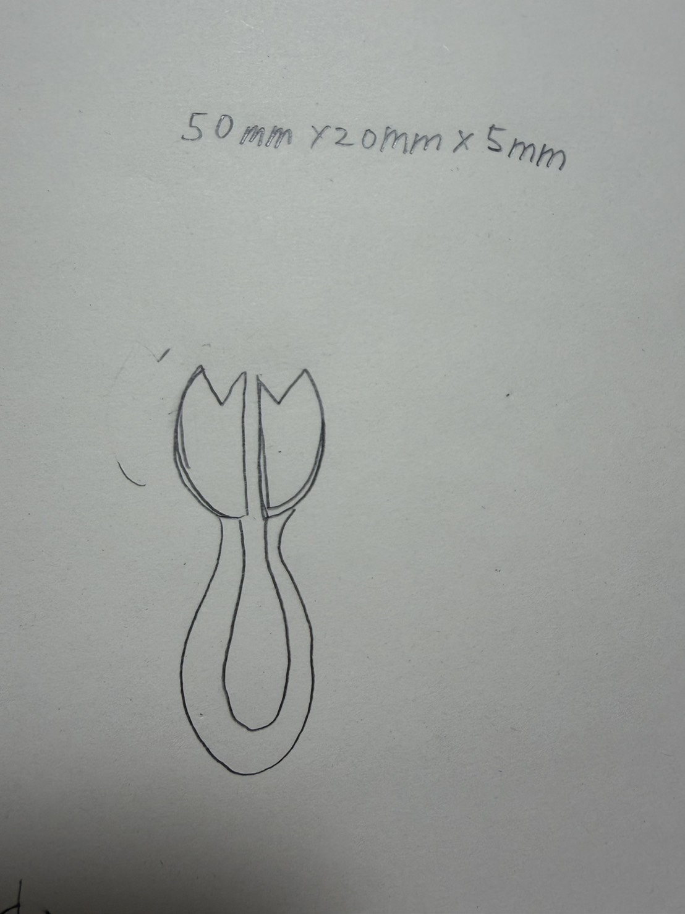
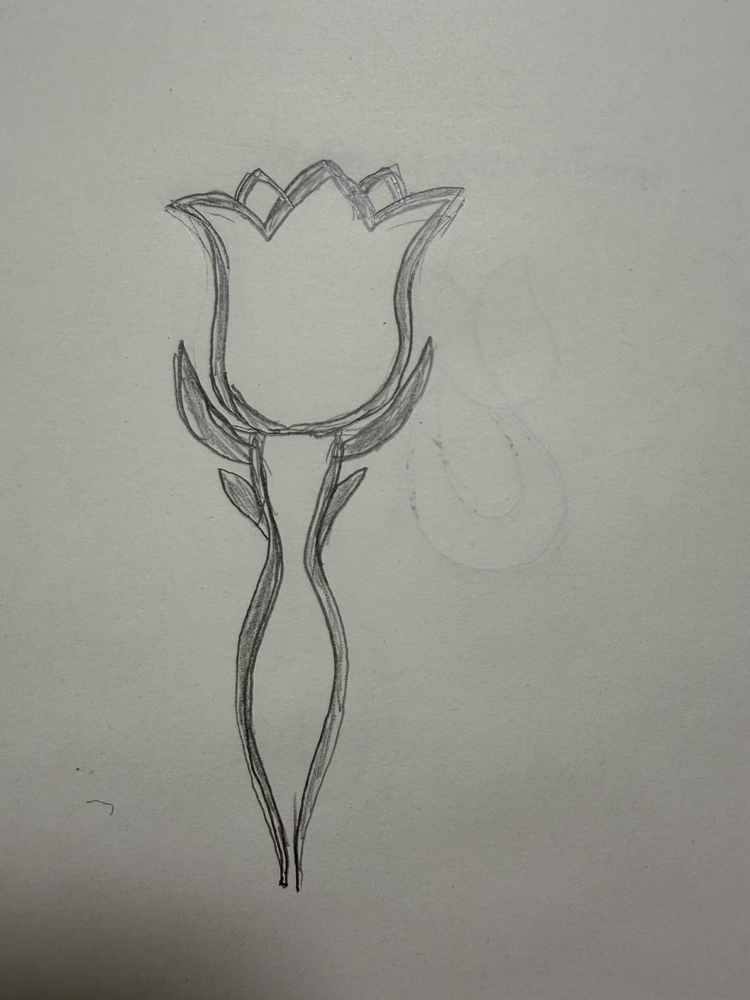
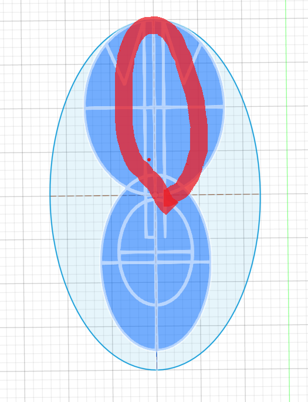
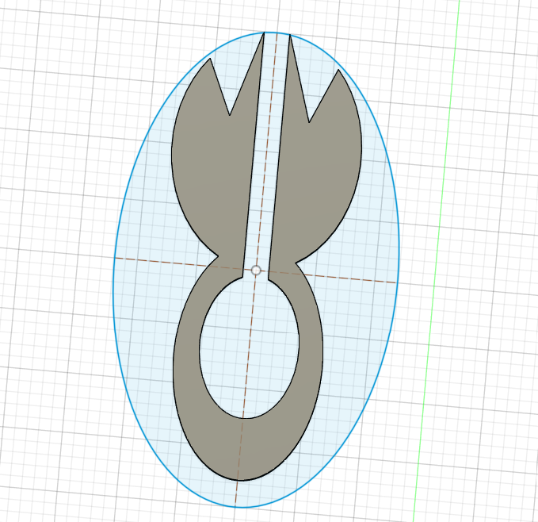
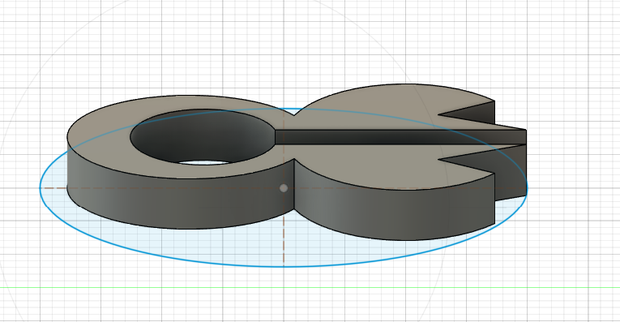
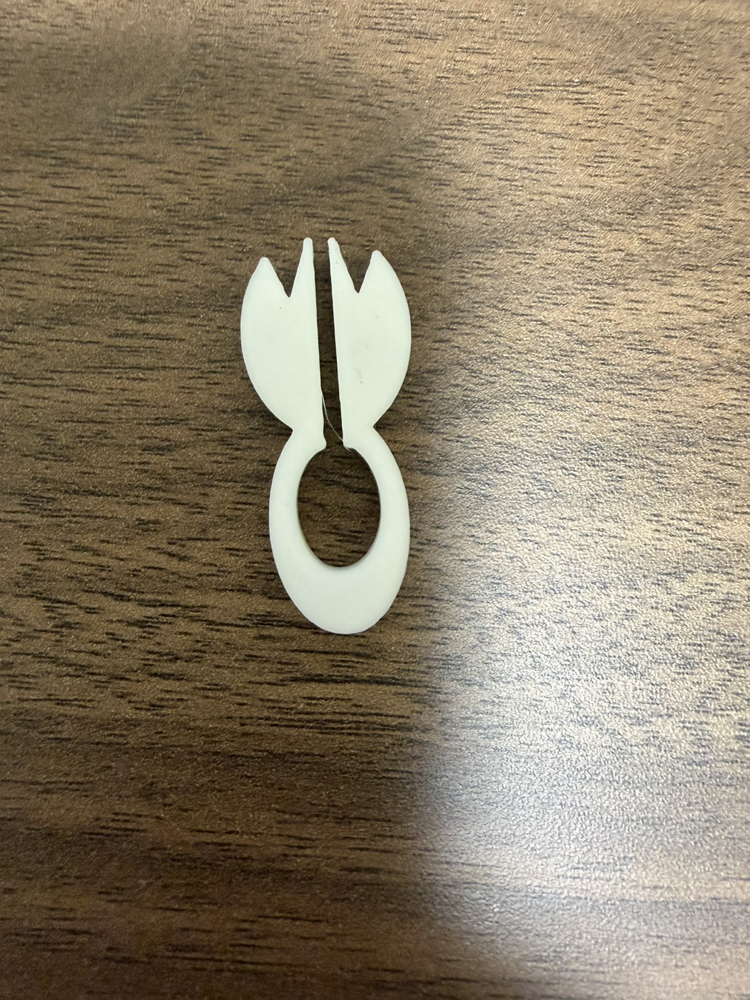
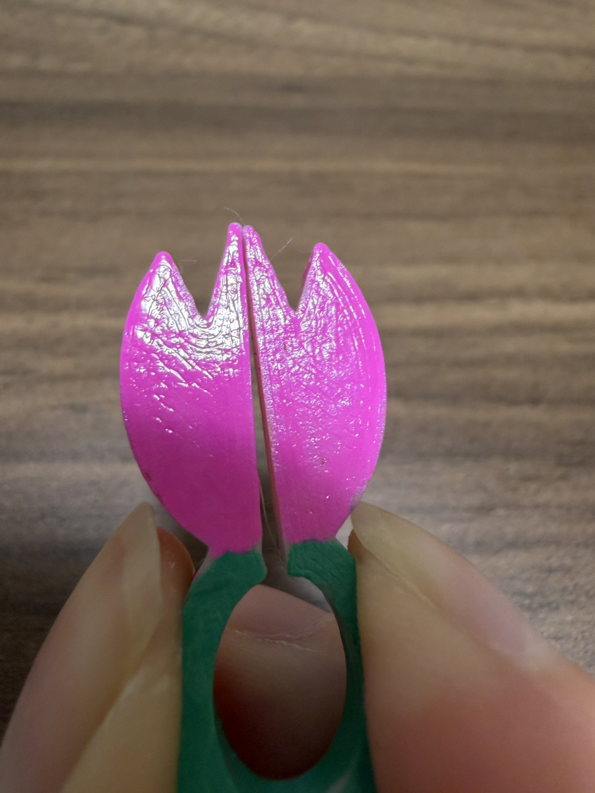
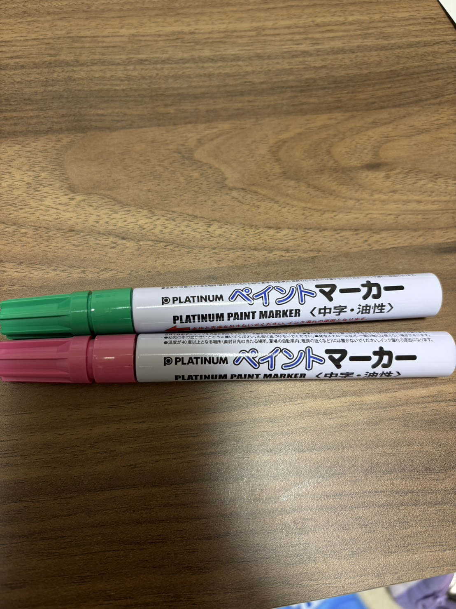

最初に作ろうとしていた形

大きさ的に難しいと思い断念



自分で間をあけないといけないと気づき長方形を入れて間をあけた



色を付けるだけでかなり雰囲気が変わったのでつけてよかったと思った。自分が作ろうと考えていた形は作り始めの私からしたらとても難しい形で作ることが出来なかったことがとても悔しい。なかなか使いこなせていなかったので、次回使う時までにYoutubuでほかの人が作っているところを見て勉強したいと思った。あとはもっと試行錯誤して作りたいと思った。今回は時間がかかってしまってすることが出来なかったけど、時間が余ったら作り直してみたり、追加で部品を作ったりしたかった。次回は早めに行動しようと思う。